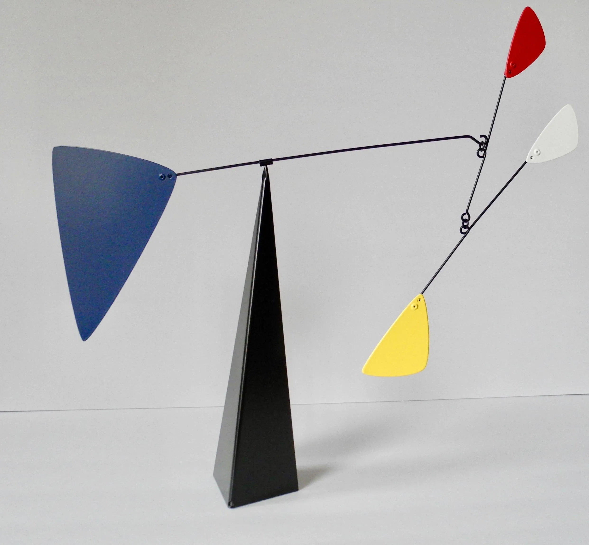
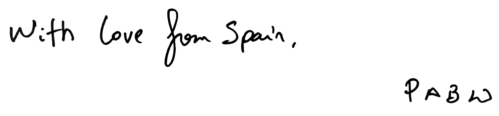

I hope this gift arrives well and on time to Albany. I have so much memories from there, the iceacreams in the entrance of Middleburgh to the swimming pool with Stella or the travel to Washington. A lot of water flowed under the bridge (a spanish expresison to say that a lot of things (the water) passed(!) since then (the bridge)) and now you are building a new bridge! I didn't ask too much about your partner, but knowing you, I'm sure it will be a sweet alliance with sincere(!) love.
Recently I saw a picture of your father Wes, looking(!) at you on your future weeding dress, (invevitablemente) droping a tear. It's very beautiful to see that this (aconcimiento) will make Annette and Wes so happy and proud of you. As I am. I think we are around the same age but you are already dealing with the next step in life, setting(!) the pilars to build a family, so special. I hope you will have a very nice time during this weeding, meanwhile(!) we think about the ones who are not with us anymore but would wish the same, and that this togetherness will last and be filled of love as your parents are doing.
About the shinny orange box. It comes from Mosel, a store in Bilbao where my parents bought over the years beautiful objects for our house. I found this object(!) very expressive and playfull, two qualities that I enjoy (que je chérit), and that I also wish your alliance to have. Enjoy assembling it, here a picture , and hoping that it will find a nice spot somewhere next to you Abi.
I'm finishing this lines in the airport waiting for my flight back to Amsterdam. A lot of hugs, luck and passion(!) for the next hundred years.
